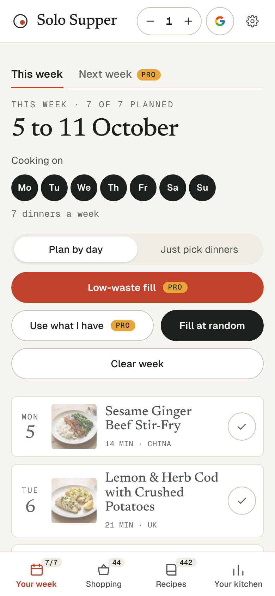
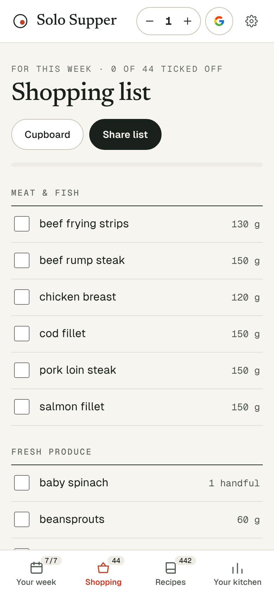

The app
Solo Supper on your home screen.
No app store needed: it installs straight from the website in a few taps. It opens to your week, and your shopping list still works in the shop with no signal.
iPhone and iPad
- Open solosupper.co.uk/plan in Safari.
- Tap the Share button: the square with an arrow pointing up.
- Scroll down, tap Add to Home Screen, then Add.
On recent versions of iOS this also works from Chrome and Edge, through their Share button.
Android
- Open solosupper.co.uk/plan in Chrome.
- Tap Install when it pops up, or open the menu (the three dots) and choose Add to Home screen or Install app.
- Tap Install.
Computer
- In Chrome or Edge, click the install icon at the right-hand end of the address bar, or open the menu and choose Install Solo Supper.
- In Safari on a Mac, choose File, then Add to Dock.
Is it the same as the website?
Yes. It is the same Solo Supper, so every recipe stays free and Pro works just the same. It just opens on its own, without the browser around it.

